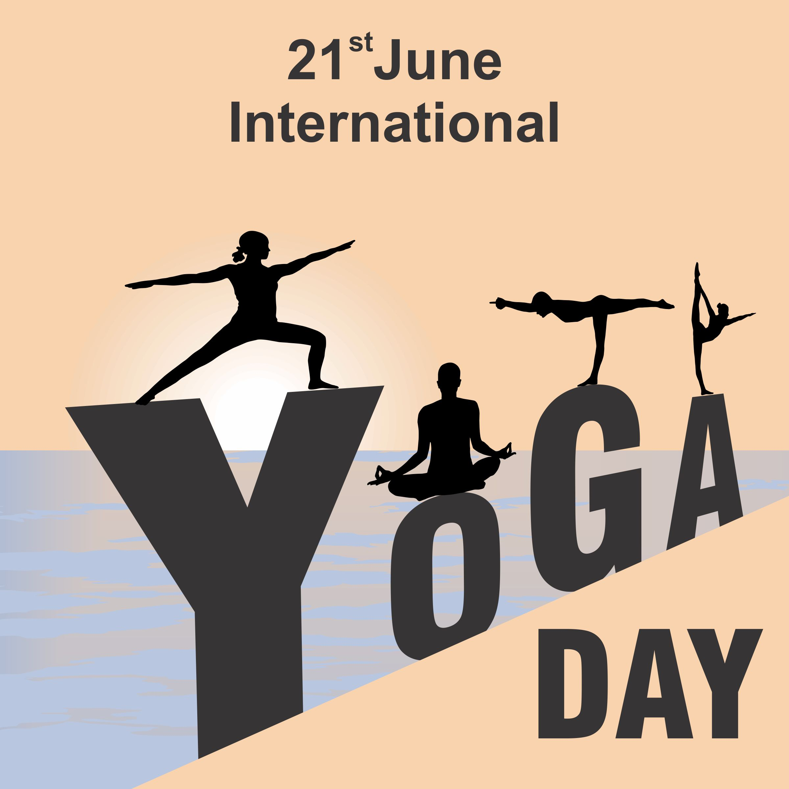

Experience the harmony of mind, body, and soul
"1947లో బ్రిటీష్ వలస పాలన నుండి దేశం స్వాతంత్య్రం పొందిన జ్ఞాపకార్థం భారతదేశంలో ప్రతి సంవత్సరం ఆగస్టు 15వ తేదీన స్వాతంత్య్రం దినోత్సవం జరుపుకుంటారు. ఈ రోజు భారతదేశంలో జాతీయ సెలవుదినం మరియు గొప్ప ఉత్సాహంతో మరియు దేశభక్తితో జరుపుకుంటారు. ఈ రోజున, భారత ప్రధాని ఢిల్లీలోని ఎర్రకోట వద్ద జాతీయ జెండాను ఎగురవేసి, గత సంవత్సరం సాధించిన విజయాలు మరియు ముందున్న సవాళ్లను వివరిస్తూ జాతిని ఉద్దేశించి ప్రసంగిస్తారు. జాతీయ గీతం ఆలపించి జెండాకు వందనం సమర్పించారు. అధికారిక వేడుకలు కాకుండా, దేశవ్యాప్తంగా వివిధ సాంస్కృతిక కార్యక్రమాలు, కవాతులు మరియు జెండా ఎగురవేత వేడుకలు కూడా ఉన్నాయి. ప్రజలు తమ ఇళ్లను మరియు ప్రభుత్వ భవనాలను జాతీయ జెండా మరియు దేశభక్తి నినాదాలతో అలంకరిస్తారు. పాఠశాలలు, కళాశాలలు మరియు ఇతర సంస్థలు ఈ రోజును జరుపుకోవడానికి సాంస్కృతిక కార్యక్రమాలు, చర్చలు మరియు క్విజ్ పోటీలను నిర్వహిస్తాయి. స్వాతంత్య్రం దినోత్సవం అనేది మన స్వాతంత్య్రం సమరయోధులు చేసిన త్యాగాలను స్మరించుకొంటూ జరుపుకునే రోజు."
"1947లో బ్రిటీష్ వలస పాలన నుండి దేశం స్వాతంత్య్రం పొందిన జ్ఞాపకార్థం భారతదేశంలో ప్రతి సంవత్సరం ఆగస్టు 15వ తేదీన స్వాతంత్య్రం దినోత్సవం జరుపుకుంటారు. ఈ రోజు భారతదేశంలో జాతీయ సెలవుదినం మరియు గొప్ప ఉత్సాహంతో మరియు దేశభక్తితో జరుపుకుంటారు. ఈ రోజున, భారత ప్రధాని ఢిల్లీలోని ఎర్రకోట వద్ద జాతీయ జెండాను ఎగురవేసి, గత సంవత్సరం సాధించిన విజయాలు మరియు ముందున్న సవాళ్లను వివరిస్తూ జాతిని ఉద్దేశించి ప్రసంగిస్తారు. జాతీయ గీతం ఆలపించి జెండాకు వందనం సమర్పించారు. అధికారిక వేడుకలు కాకుండా, దేశవ్యాప్తంగా వివిధ సాంస్కృతిక కార్యక్రమాలు.